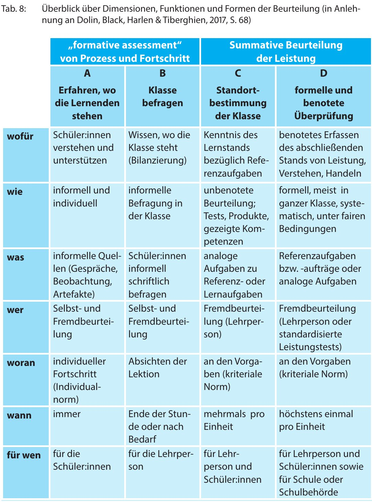
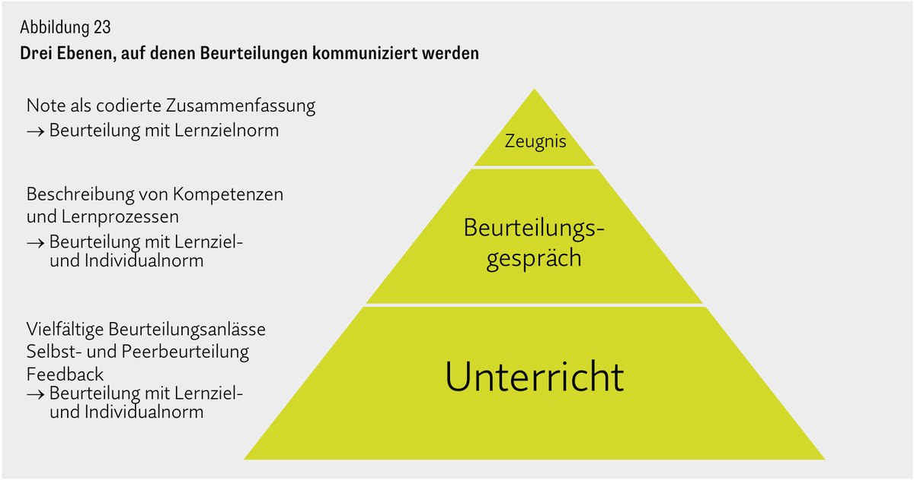
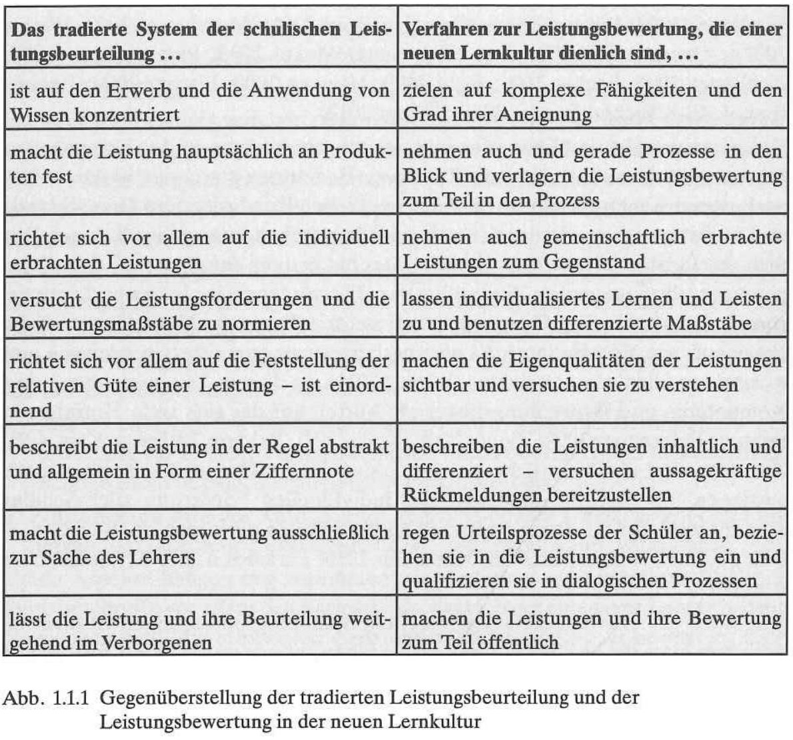
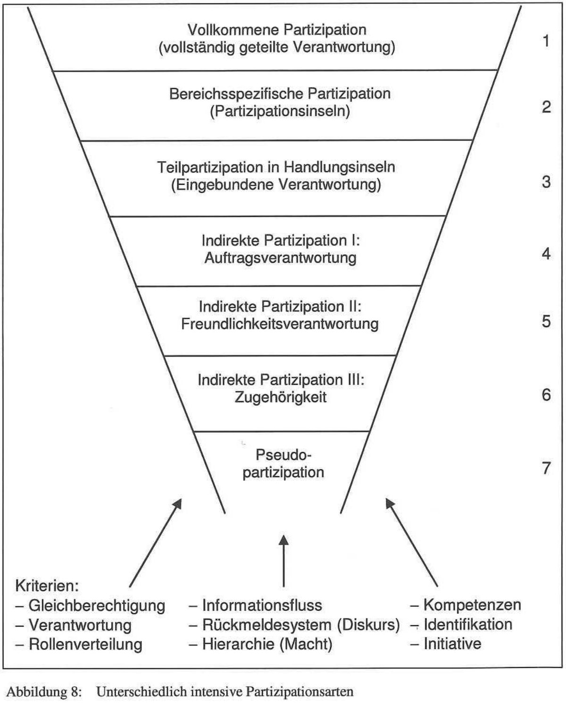
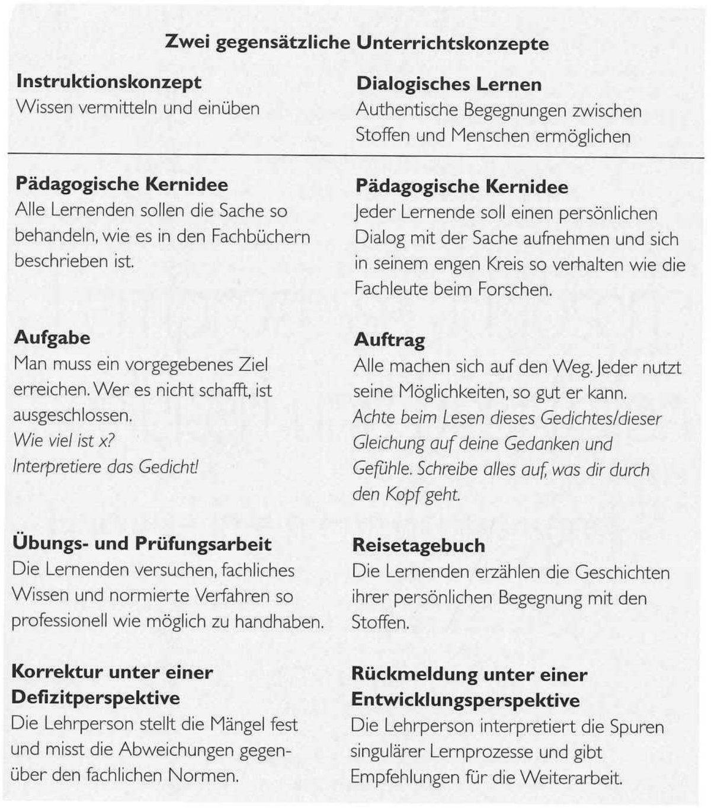

Home › Pedagogia › Coinvolgere gli allievi nei processi di valutazione
Pedagogia · Tema
Coinvolgere gli allievi nei processi di valutazione
Come passano gli allievi da valutati a partecipanti? Teorie, concetti, tensioni e possibilità d'azione per la pratica.
Di cosa si tratta
Presupposti di apprendimento e di rendimento eterogenei sono una realtà della scuola quotidiana. Anche nella valutazione gli allievi vanno coinvolti e devono contribuire attivamente a definire le esigenze: chiariscono obiettivi e criteri, si autovalutano e si valutano a vicenda e portano il loro punto di vista in colloqui e decisioni.
Questa pagina chiarisce innanzitutto a che cosa serve la valutazione, che cosa caratterizza una nuova cultura della valutazione e che cos'è la vera partecipazione. Mostra poi come gli allievi contribuiscono a definire i criteri e si valutano da sé e a vicenda, e presenta portfolio, presentazione, verifiche adattate e la valutazione complessiva per le decisioni di carriera scolastica. Puoi leggerla dall'alto in basso o saltare tramite l'indice.
Die These klingt selbstverständlich: Die Lehrperson ist ausgebildet, sie trägt die Verantwortung, sie setzt die Note. Felix Winter beschreibt aber genau dies als Merkmal des tradierten Systems, das die Leistungsbewertung ausschliesslich zur Sache der Lehrperson macht (Winter, 2016, S. 31). Diese Seite fragt: Wie können Lernende an der Beurteilung ihres eigenen Lernens beteiligt werden, ohne dass die Lehrperson ihre Verantwortung abgibt?
Gedankengang · drei Fragen an jede Beurteilung
1
Wozu? Dient sie dem Weiterlernen (Begleitung) oder einem Entscheid über Noten und Laufbahn (Allokation)? → Funktionen
2
Wer urteilt? Nur die Lehrperson, oder auch die lernende Person selbst und die Mitlernenden? → Selbst- und Peer-Beurteilung
3
Woran? Kennen und verstehen die Lernenden die Kriterien, und haben sie sie mitbestimmt? → Ziele und Kriterien
Kompetenz B.04 · Lernende in Beurteilungsprozesse involvieren
Ausgangslage: Heterogene Lern- und Leistungsvoraussetzungen sind im Schulalltag Realität, und die Lehrperson soll dieser Heterogenität Rechnung tragen. Auch bei der Beurteilung sollen Lernende einbezogen werden und ihre Leistungsanforderungen aktiv mitgestalten.
Tätigkeiten (Sek I und Maturitätsschulen)
Partizipation, Eigenverantwortung und formative Beurteilung fördern →
Lernende in die Konkretisierung von Leistungserwartungen integrieren →
Lernende eigene Leistungskriterien bestimmen lassen →
Lernende zur Selbstbeurteilung anregen und anleiten →
Lernende anleiten, die Leistung der Mitlernenden zu beurteilen →
Laufbahnentscheide auf eine Gesamtbeurteilung abstützen →
Involvierte: Lehrperson, Lernende, SHP. Rahmenbedingungen: Lehrplan 21, Rahmenlehrplan für Maturitätsschulen, kantonale Handreichung und Vorgaben zur Beurteilung.
TheorieGedankengangSpannungsfeldPraxis
So liest du diese Seite
A klärt, wozu beurteilt wird, was eine neue Beurteilungskultur ausmacht und was echte Partizipation ist. B zeigt, wie Lernende Ziele und Kriterien mitbestimmen, sich selbst und einander beurteilen. C stellt Portfolio und Präsentation vor, zeigt, wie Lernkontrollen angepasst und Laufbahnentscheide begründet werden. D bietet Werkzeuge, E die Spannungsfelder. Verwandte Themen: Condurre colloqui di apprendimento (Feedback, Standortgespräche) und Analizzare l'apprendimento (Urteilsfehler, Diagnostik).
Alle Aussagen stützen sich auf die im Literaturverzeichnis genannten Quellen und sind in eigenen Worten zusammengefasst. Hinweise mit «eigene Synthese» verbinden mehrere Quellen. Abbildungen mit dem Vermerk Bildzitat sind aus den Quellen übernommen und mit Fundstelle zitiert. Alle übrigen Grafiken sind eigene Darstellungen, die ich mit Hilfe von Claude.ai erstellt habe, teils in Anlehnung an die genannten Quellen. Fallbeispiele ohne Quellenangabe sind erfunden.
Überblick
Wie die Konzepte zusammenhängen
Beurteilung bewegt sich zwischen zwei Polen: Accompagnamento (das Lernen unterstützen) und Allokation (Noten, Promotion, Laufbahn). Dazwischen liegen die Formen, mit denen Lernende beteiligt werden. Klicke auf einen Begriff, um direkt dorthin zu springen.
Eigene Darstellung, angelehnt an die Gliederung «Begleitung ↔ Allokation» der Kompetenzbeschreibung.
AÜber Beurteilung sprechenFunktionen, eine neue Beurteilungskultur und was Partizipation wirklich heisst
A · Funktionen
Begleitung und Allokation
Schulische Beurteilung erfüllt zwei Aufgaben, die sich nicht immer vertragen. Sie soll das Lernen begleiten (formativ: erkennen, wo jemand steht, und den nächsten Schritt finden), und sie soll Leistungen bilanzieren (summativ: Noten, Zeugnisse, Promotion und Übertritt). Lötscher et al. betonen, dass Beurteilen im Alltagsverständnis oft auf «Noten geben» und «Selektionsentscheide treffen» verkürzt wird. Eine professionelle Sicht stellt dagegen die formative Funktion in den Vordergrund (Lötscher et al., 2023, S. 116 f.).

Bildzitat · Fraefel (2023), Kap. 10, Tab. 8, S. 137: Überblick über Dimensionen, Funktionen und Formen der Beurteilung (in Anlehnung an Dolin, Black, Harlen & Tiberghien, 2017).
Was die Tabelle zeigt
Nur die Spalte D, die formelle, benotete Überprüfung, wird typischerweise als belastend erlebt. Die Spalten A bis C dienen dem Verstehen und Unterstützen. Selbst- und Fremdbeurteilung haben ihren Platz vor allem in A und B. Wer beteiligt ist, ändert sich also mit der Funktion.Fraefel, 2023, S. 136–138
Nicht vermischen
Wenn alles, was Lernende tun, in die Note einfliessen könnte, verwandelt sich jede formative Diagnose in eine «Mini-Beurteilung». Lernende trauen sich dann keine Fehler mehr zu. Fraefel spricht davon, dass die Vermischung das Lernklima vergiftet. Lernende müssen deshalb genau wissen, wann sie nicht summativ beurteilt werden.Fraefel, 2023, S. 144 (dort Harlen & James, 1997)
Praxis
Kennzeichne jede Aufgabe sichtbar: Übungsraum (formativ, Fehler erwünscht) oder Bilanz (summativ, zählt für die Note). Ein Symbol auf dem Blatt genügt (eigene Umsetzung).

Bildzitat · Lötscher, Naas & Roos (2023), Kompetenzorientiert beurteilen, Abb. 23, S. 107: Drei Ebenen, auf denen Beurteilungen kommuniziert werden.
Gedankengang: Wo können Lernende mitreden?
Die Pyramide zeigt, dass der weitaus grösste Teil der Beurteilung im Unterricht stattfindet. Dort beurteilen sich Lernende laufend selbst und gegenseitig und gleichen dies mit der Fremdbeurteilung ab. Im Beurteilungsgespräch bringen sie ihre Sicht auf Lernprozesse und Ergebnisse ein. Erst auf der obersten Ebene, im Zeugnis, verdichtet die Lehrperson alles zu einer Note. Beteiligung ist also auf den unteren zwei Ebenen am wirksamsten (eigene Synthese nach Lötscher et al., 2023, S. 106 f.).
A · Beurteilungskultur
Eine neue Beurteilungskultur
Felix Winter setzt sich seit Jahrzehnten für eine Reform der Leistungsbewertung ein. Seine pointierte Gegenüberstellung zeigt, warum eine «neue Lernkultur» mit offenen, individualisierten Lernformen eine andere Art der Beurteilung braucht. Die zentrale Abbildung ist hier als Bildzitat übernommen.

Bildzitat · Winter (2016), Leistungsbewertung, Abb. 1.1.1, S. 31: Gegenüberstellung der tradierten Leistungsbeurteilung und der Leistungsbewertung in der neuen Lernkultur.
Vom Objekt zum Subjekt
Wenn Lernende ihre Leistungen auswählen, zusammenstellen und präsentieren, gewinnen sie ein Stück Selbstbestimmung gegenüber dem Leistungsanspruch der Schule. Sie sind dann nicht mehr nur Objekt der Prüfung, sondern treten als Subjekt auf: Aus dem Geprüftwerden kann eine Rechenschaftslegung über das eigene Lernen werden.Winter, 2016, S. 30 (dort Häcker, 2007)
Bewertung in allen Phasen
Im traditionellen Modell folgen Unterricht, Klausur, Note und Zeugnis nacheinander. Im veränderten Modell finden Bewertung und Reflexion vorausschauend, begleitend, abschliessend und nachträglich statt. Viele Verfahren lassen Bewertungen dialogisch entstehen, und Leistungen werden in Portfolios direkt dokumentiert und präsentiert.Winter, 2016, S. 72–74
Selbst eingeräumt
Winter bezeichnet seine Gegenüberstellung selbst als pointiert und vielleicht überzeichnet. Auch im lehrerzentrierten Unterricht seien viele Schritte in Richtung der zweiten Spalte möglich (Winter, 2016, S. 31).
Ermöglichungsdidaktik: Lernen lässt sich nicht erzeugen
Rolf Arnold und Michael Schön stellen Annahmen eines «mechanistischen» und eines «lebendigen» Lernverständnisses gegenüber. Mechanistisch gedacht führt die blosse Präsentation von Information zu Lernen, Lernenden kann keine Verantwortung anvertraut werden, und Prüfungen gelten als geeignetes Mittel, erworbene Qualifikationen festzustellen. Lebendig gedacht tragen Lernende ein natürliches Lernpotenzial in sich, und Lernen aus Eigeninitiative wirkt am nachhaltigsten. Lernen kann deshalb nur ermöglicht, nicht erzeugt werden.Arnold & Schön, 2019, S. 48 f. (Tabelle nach Arnold & Schüssler, 1998)
Verknüpfung
Arnold und Schön empfehlen Lehrpersonen die Selbstreflexionsfrage, wie sie die Lernenden auch in den Planungs- und Evaluationsprozess einbeziehen, im Sinne einer vollständigen Handlung (Arnold & Schön, 2019). Das trifft den Kern von B.04: Wer Lernen als selbstgesteuert versteht, kann die Beurteilung nicht vollständig von aussen steuern (eigene Synthese).
Felix Winter im Gespräch
Ein Video-Interview mit Felix Winter zur Leistungsbeurteilung, wie es auch im Modul verwendet wird:
«Partizipation» ist ein beliebtes Wort, aber oft unklar. Fritz Oser und Horst Biedermann nennen den Begriff einen «Meister der Verwirrung» und fordern, genau zu klären, welche Berechtigungen und Verpflichtungen gemeint sind: Wer entscheidet worüber, wer trägt Verantwortung und Risiken, welche Kompetenzen werden vorausgesetzt (Oser & Biedermann, 2006, S. 26 f.)?

Bildzitat · Oser & Biedermann (2006), Partizipation – ein Begriff, der ein Meister der Verwirrung ist, Abb. 8, S. 34: Unterschiedlich intensive Partizipationsarten.
Pseudopartizipation
Pseudopartizipation täuscht Mitsprache vor, wo keine besteht, etwa ein Schülerparlament ohne reale Entscheidungsbefugnis. Bewirkt der Wille der Beteiligten am Ende keinen Unterschied, ist Partizipation nur scheinbar vorhanden. Jugendliche nehmen solche Scheinpartizipation sehr feinfühlig wahr.Oser & Biedermann, 2006, S. 19 f., 33 f.
Was Schweizer Jugendliche erleben
In einer Befragung von über 2000 Jugendlichen im Alter von 14 bis 15 Jahren gab nur eine kleine Minderheit an, bei Schulregeln wirklich mitbestimmen zu können. Bei der Beurteilung eigener Arbeiten sagte dagegen knapp die Hälfte, mithelfen zu können. Auf der Ebene des Unterrichts ist Beteiligung also eher möglich als auf der Ebene der Schulorganisation.Oser & Biedermann, 2006, S. 20–25
Wann Partizipation nicht passt
Nicht alles ist partizipativ zu entscheiden. Manche Leistungen müssen allein erbracht und individuell zugerechnet werden, und manchmal gibt es gute Gründe, Mitbestimmung zu begrenzen, etwa wenn eine Lehrperson zeigt, welche Übung jetzt die richtige ist. Gespräche ohne Entscheidungsrelevanz sind noch keine Partizipation (Oser & Biedermann, 2006, S. 25 f.).
Anerkennung
Demokratie als Lebensform beruht auf Anerkennung, Selbstwirksamkeit und Verantwortung. Die Überzeugung eigener Wirksamkeit setzt Anerkennung voraus, und ohne sie gibt es keine Verantwortungsübernahme.Edelstein, 2009, Einleitung
Feedback als Demokratielernen
Eine demokratieförderliche Lernkultur zeichnet sich durch Aushandlungs-, Feedback- und Konfliktlösungsprozesse aus, gerade auch in Situationen der Leistungsbewertung.Edelstein, 2009, Einleitung
Selbstwirksamkeit
Am stärksten wirken eigene Erfolgserfahrungen, die der eigenen Anstrengung zugeschrieben werden. Dazu kommen Modelle, glaubwürdiger Zuspruch und das Deuten eigener Gefühle. Wird die Meinung von Kindern wertgeschätzt, stärkt das ihre Selbstwirksamkeit.Urton, 2017, S. 4–8 (nach Bandura, 1997)
Gedankengang: Beteiligung an der Beurteilung als Stufe
Auf Osers Trichter übertragen heisst das: Wenn Lernende nur angehört werden, die Note aber feststeht, bleibt es bei «Freundlichkeitspartizipation» oder gar Pseudopartizipation. Echte Beteiligung entsteht, wenn klar ist, worüber Lernende mitentscheiden (z. B. Kriterien, Auswahl der Portfolio-Belege, Selbstbeurteilung als Teil der Gesamtbeurteilung) und worüber nicht (z. B. die rechtlich vorgegebene Zeugnisnote). Diese Transparenz ist selbst ein Schutz gegen Pseudopartizipation (eigene Synthese aus Oser & Biedermann, 2006, und Fraefel, 2023).
BLernende einbeziehenZiele und Kriterien klären, sich selbst und einander beurteilen, dialogisch zurückmelden
B · Leistungserwartungen
Lernziele und Erfolgskriterien gemeinsam klären
Die besten Lernziele bleiben wirkungslos, wenn Lernende sie nicht kennen oder nicht akzeptieren. Wer Ziele und Kriterien mitbespricht, erlebt sie eher als eigene Ziele, entwickelt ein besseres Qualitätsbewusstsein und wird mündiger (Lötscher et al., 2023, S. 62, 66).
Fünf Strategien formativer Beurteilung
1
Lernziele und Erfolgskriterien klären
2
mit Aufgaben, Fragen und Diskussionen den Lernstand erheben
3
Lernende als Zuständige ihres eigenen Lernens aktivieren
4
Lernende als lehrreiche Ressourcen füreinander aktivieren
5
lernförderliches Feedback geben
Lötscher et al., 2023, S. 35 f. (nach Wiliam & Thompson, 2008)
Gedankengang
Drei der fünf Strategien (1, 3 und 4) beschreiben direkt, was B.04 verlangt: Lernende verstehen die Kriterien, beurteilen sich selbst und unterstützen einander. Wer die Strategien umsetzt, erlebt auch Selbstwirksamkeit: Wer Fortschritte sieht, erfährt, dass er oder sie für das eigene Lernen zuständig sein kann (Lötscher et al., 2023, S. 37).
So werden Kriterien verständlich
Ziele an die Wandtafel zu schreiben genügt nicht. Selbst Fachleute können Qualität oft nicht in Regeln fassen. Verständlich werden Kriterien erst, wenn Lernende sie an Beispielen entdecken, diskutieren und auf die eigene Arbeit anwenden (Lötscher et al., 2023, S. 62 f., nach Wiliam, 2018).
An Beispielen
Lernende vergleichen mehrere Buchanfänge und halten fest, was einen spannenden Anfang ausmacht. So entstehen Erfolgskriterien in ihrer eigenen Sprache.Lötscher et al., 2023, S. 63
An Zwischenergebnissen
Nach einer Übungsphase wählen Lernende in Kleingruppen die besten Versuche aus und tauschen Tipps aus. Die Beispiele müssen nicht perfekt sein.Lötscher et al., 2023, S. 64
Mit Rastern
Beurteilungsraster und «rubrics» zeigen Kriterien und Qualitätsstufen. Sie beschreiben aber nur eine idealtypische Entwicklung, und zu spezifische Raster können die Vielfalt der Lösungen einengen.Lötscher et al., 2023, S. 64–66
Transparenz als Fairness
Fraefel nennt Transparenz und Validität als Mindeststandards fairer summativer Beurteilung: Lernende wissen, was geprüft wird und nach welchen Kriterien. Ein Satz wie «Wenn ich gewusst hätte, dass das kommt …» zeigt, dass diese Standards verletzt wurden (Fraefel, 2023, S. 142, 146).
B · Eigene Kriterien
Lernende eigene Kriterien bestimmen lassen
Noch einen Schritt weiter geht es, wenn Lernende Kriterien nicht nur verstehen, sondern mitentwickeln oder für sich selbst setzen. Zwei Werkzeuge eignen sich besonders: die Single-Point-Rubric und die Qualitätensuche.
Single-point rubric
Jarene Fluckiger beschreibt ein Raster, das nur eine Qualitätsstufe beschreibt: das, was als kompetent gilt. Die Kriterien werden mit den Lernenden erarbeitet oder überarbeitet. Daneben gibt es drei leere Spalten: Was fehlt noch (eigene nächste Ziele), woran zeigt sich, dass ein Kriterium erfüllt ist (Belege), und wo bin ich darüber hinausgegangen. Das Raster dient dem Weiterlernen, nicht dem Bepunkten.Fluckiger, 2010, S. 18–21
Vier Fragen der Lernenden
Ich weiss, wohin ich gehe.
Ich weiss, wo ich jetzt stehe.
Ich weiss, wie ich dorthin komme.
Ich weiss, wie ich darüber hinausgehen kann.
Fluckiger, 2010, S. 19 f. (nach Chappuis, 2005)
Warum nur eine Stufe?
Mehrstufige Raster beschreiben ausführlich, wie eine Arbeit schlecht sein kann, und deckeln Kreativität bei der obersten Stufe. Lernende hören oft auf, sobald die oberste Stufe erreicht ist. Die offene dritte Spalte lässt Qualität nach oben offen. In Fluckigers Fallstudien war die Arbeit mit Single-Point-Rubrics mindestens gleich gut, und die Lernenden halfen einander mehr (Fluckiger, 2010, S. 19, 21).
Praxis · Qualitätensuche
Winter schlägt vor, Schülerarbeiten zuerst nach Qualitäten statt nach Fehlern zu durchsuchen:
offen durchlesen und gelungene Stellen markieren
diese Stellen genauer anschauen: Was ist gelungen?
die Arbeit aus dem Konzept der Autorin, des Autors heraus verstehen
Was Lehrpersonen so üben, können auch Lernende an fremden und eigenen Arbeiten lernen. Gefundene Qualitäten werden zu Kriterien für alle.Winter, 2018, Kap. 12, S. 194–196 (Übertragung auf Lernende: eigene Synthese)
Noch zu tunmeine nächsten Ziele
Kriteriumgemeinsam festgelegt
Belegworan sieht mensch es?
Darüber hinaus
Einstieg: Der erste Satz macht neugierig.
«Meine Partnerin wollte sofort weiterlesen.»
Zeitform prüfen
Zeitform: Die Erzählung bleibt im Präteritum.
Spannung: Es gibt einen Wendepunkt.
Absatz 3: Der Strom fällt aus.
zwei Wendepunkte, Leser:in wird getäuscht
Eigenes Beispiel einer Single-Point-Rubric (Aufsatz), Aufbau nach Fluckiger (2010).
B · Selbstbeurteilung
Zur Selbstbeurteilung anregen und anleiten
Lernende wissen meist recht genau, wo sie stehen. Realistische Selbsteinschätzung ist lernbar und wichtig, um das eigene Lernen zu steuern (Fraefel, 2023, S. 147). Spannend wird Selbstbeurteilung aber erst, wenn sie nicht nur eine Note vorwegnimmt, sondern Bedingungen und Ursachen der Leistung in den Blick nimmt (Winter, 2018, Kap. 8).
Eigene Darstellung nach Winter (2018), Abb. 8.1, S. 102: Reflexion, Rückmeldung und Schülerselbstbeurteilung im Kreislauf des Lernens.
Reflexionsart
Di cosa si tratta
Beispielfrage
Lernreflexion
Vorgehen, Wege und Strategien
«Wie bin ich beim Schreiben meiner Geschichte vorgegangen? Was hat geholfen?»
Leistungsreflexion
Erreichen von Zielen und Qualitätsansprüchen
«Wie weit ist es mir gelungen, eine spannende Geschichte zu schreiben?»
Selbstreflexion
eigene Fähigkeiten, Schwächen und Interessen
«Was gelingt mir beim Schreiben solcher Geschichten gut?»
nach Winter, 2018, Abb. 8.7, S. 114 f. (gekürzt)
Praxis · ausführliche Selbstbeurteilung nach grösseren Arbeiten
Winter schlägt für Referate, Projekte oder Facharbeiten fünf Blöcke vor:
Lerneffekt: fachlich und über die eigene Arbeitsweise
eigene Bewertung: Stärken, Schwächen, fehlende Informationen
Hintergründe: welche Fähigkeiten halfen, wo ich mich entwickeln will
eine Bitte an die Lehrperson: Wozu wünsche ich mir Rückmeldung?
nach Winter, 2018, Abb. 8.13 (dort leicht verändert aus Winter, Schwarz & Volkwein, 2008)
Selbstbeurteilung und Note
Wenn die Selbsteinschätzung in die summative Beurteilung einfliessen soll, also Lernende über ihre Noten mitbestimmen, braucht es klare Vereinbarungen, Verfahren und Kriterien und keine Vermischung mit formativer Selbsteinschätzung. Klaffen Selbst- und Fremdeinschätzung dauerhaft auseinander, schadet das der Motivation. Idealerweise finden Lehrperson und Lernende zu einer einvernehmlichen Einschätzung.Fraefel, 2023, S. 147
Individuelle Bezugsnorm
Rückmeldungen zur Lernentwicklung, die den eigenen Fortschritt mit Anstrengung verbinden statt mit Begabung oder sozialem Vergleich, stärken die Selbstwirksamkeit, gerade bei Lernenden, die deutlich hinter dem Klassenniveau liegen. Selbst gesetzte, konkrete Nahziele erhöhen die Zielbindung.Urton, 2017, S. 6–8
B · Peer-Beurteilung
Einander beurteilen und Rückmeldungen geben
Peer-Feedback und Peer-Beurteilung sind Formen kooperativen Lernens. Damit sie gelingen, muss klar sein, dass es um gegenseitige Unterstützung geht. Es darf nicht der Eindruck entstehen, Lernende müssten einander benoten. Die Wirkung hängt stark von der Anleitung durch die Lehrperson ab (Lötscher et al., 2023, S. 73, nach Strijbos & Wichmann, 2018).
Peer-Feedback schrittweise aufbauen
a
Einfache Kontrollaufgaben: Beim Üben mit Karten sortiert der Partner in sicher, unsicher, nicht gewusst.
b
Gemeinsame Rückschau: «Ich habe gelernt, dass …», «Geholfen hat mir …»
c
Einander Fragen stellen: «Was ist der Unterschied zwischen … und …?»
d
Regeln für hilfreiches Feedback an anonymisierten Beispielen entwickeln. Ohne Anleitung urteilen Lernende oft sehr hart.
e
Satzanfänge: «Ich finde gut, wie du …», «Nicht verstanden habe ich …», «Mein Tipp für dich …»
f
Zuerst zu zweit: Beide Rollen üben, geben und annehmen.
g
Phasen strukturieren, mit klaren Zeitfenstern.
Lötscher et al., 2023, S. 74–76 (nach Wiliam & Leahy, 2015; Wiliam, 2011)
Min.
Schritt im 7-Schritt-Verfahren
3
die Arbeit des Peers lesen
1
überlegen, ob eine Klärungsfrage nötig ist
2
Klärungsfragen gegenseitig stellen und beantworten
2
Feedback schreiben
1
erhaltenes Feedback lesen
1
Rückfragen zum Feedback stellen
5
das Feedback für die Überarbeitung nutzen
Lötscher et al., 2023, S. 76 (nach Wiliam & Leahy, 2015, S. 147)
Verknüpfung
Die Feedbackebenen Aufgabe, Prozess, Selbstregulation und Selbst (Wisniewski & Zierer, 2017) und das Vorgehen bei kritischer Rückmeldung (Furman & Ahola, 2017) sind auf der Seite Condurre colloqui di apprendimento ausführlich beschrieben. Sie eignen sich auch als Raster, an dem Lernende ihr eigenes Peer-Feedback überprüfen.
Konferenzen über Lernwege
In heterogenen Kleingruppen präsentieren Lernende ihre Lösungen und diskutieren darüber. Sie müssen ihr Vorgehen begründen und die Gedanken anderer nachvollziehen. Die Lehrperson moderiert und erfährt dabei viel über Vorstellungen und Strategien (Lötscher et al., 2023, S. 79).
B · Dialogisches Lernen
Rückmeldung unter einer Entwicklungsperspektive
Urs Ruf und Peter Gallin stellen zwei Unterrichtskonzepte gegenüber. Im Instruktionskonzept wird korrigiert, was von der Norm abweicht. Im dialogischen Lernen interpretiert die Lehrperson die Spuren individueller Lernwege und gibt Empfehlungen für die Weiterarbeit. Die Gegenüberstellung ist zentral für B.04 und deshalb als Bildzitat übernommen.

Bildzitat · Ruf & Gallin (2011), Dialogisches Lernen in Sprache und Mathematik, Bd. 1, S. 49: Zwei gegensätzliche Unterrichtskonzepte.
Vier Pfeiler
Kernidee (die Lehrperson macht ihren Zugang zur Sache sichtbar), Incarico (offen, viele Wege möglich), Reisetagebuch (Lernjournal, in dem Wege, Irrwege und Entdeckungen festgehalten werden) und Rückmeldung (Teil des Dialogs, in dem auch die Lehrperson lernt).Ruf & Gallin, 2011, Vorwort, S. 6 f.
Praxis · Häklein statt Punkte
Für kleinere Arbeiten nutzen Ruf und Gallin Häklein, die den Einsatz der individuellen Möglichkeiten würdigen:
✓ erfüllt, Bemühen erkennbar
✓✓ eigenständige, persönliche Leistung
✓✓✓ ein «Wurf»
Misslingt eine Arbeit, gibt es eine zweite Chance. Die Zeugnisnote beruht auf einer Gesamtbeurteilung, an der sich die Lernenden mit einer Selbstbeurteilung beteiligen. Unterschiede zwischen Selbst- und Fremdbeurteilung werden im Gespräch geklärt.Ruf & Gallin, 2011, S. 46–48
Prüfungen als Spielregel
Ruf und Gallin akzeptieren, dass die Gesellschaft isolierte Leistungsnachweise verlangt. Prüfungen dürfen aber nicht zum eigentlichen Zweck der Schule werden, sonst lähmen sie die Lernprozesse. Entscheidend ist der Austausch (Ruf & Gallin, 2011, S. 47).
CFormen und EntscheidePortfolio und Präsentation, angepasste Lernkontrollen, Gesamtbeurteilung und Laufbahn
C · Beurteilungsformen
Portfolio und Präsentation
Ein Portfolio ist eine zielgerichtete Sammlung von Arbeiten, die Bemühungen, Fortschritte und Leistungen zeigt. Zur Definition gehört ausdrücklich, dass die Lernenden an der Auswahl der Inhalte, an den Auswahlkriterien und an den Beurteilungskriterien beteiligt sind und ihre Arbeit reflektieren (Winter, 2018, S. 174, nach Paulson et al., 1991). Damit ist das Portfolio die Beurteilungsform, in der B.04 am vollständigsten umgesetzt wird.
Bildzitat · Winter (2018), Lerndialog statt Noten, Abb. 11.1, S. 174: Schritte bzw. Prozessmerkmale der Portfolioarbeit (aus Winter, 2012b).
Wo Lernende mitbestimmen
In fast jedem Schritt sind die Lernenden beteiligt: Sie vereinbaren den Rahmen mit, wählen Belege aus, reflektieren, präsentieren, geben einander Rückmeldung und entwickeln dabei Kriterien. Die Lehrperson begleitet, kommentiert und bewertet (eigene Lesart von Winter, 2018, S. 174).
Projektportfolio
begleitet eine Unterrichtsphase; gut für den Einstieg
Kurs- und Fachportfolio
über einen Kurs oder mehrere Schuljahre in einem Fach
Lern-Entwicklungs-Portfolio
Belege aus mehreren Fächern; kann Noten ergänzen oder ersetzen
Vorsicht
Als «Allheilmittel» rasch für alle eingeführt, haben Portfolios wenig Erfolg.
Winter, 2018, S. 175 f.; Lötscher et al., 2023, S. 72 f. (dort Häcker & Winter, 2006)
Präsentation: Leistungen sichtbar machen
Präsentationen werden oft nicht benotet. Es lohnt sich trotzdem, für Anerkennung und aussagekräftige Rückmeldung zu sorgen. Weil viele Präsentationsformen flüchtig sind, empfiehlt Winter, vorab Personen mit der Beobachtung und Rückmeldung zu beauftragen und Griglia zu nutzen, die sprachlich ausformuliert und spezifisch auf die Präsentationsform bezogen sind.Winter, 2018, Kap. 13, S. 207 f.
Lernende, die solche Bögen für andere ausfüllen, gewinnen Kriterien für ihre eigenen Vorträge.nach Winter, 2018, Abb. 13.2, S. 207; Kap. 8
C · Lernkontrollen
Lernkontrollen individuell anpassen
Heterogene Lernvoraussetzungen verlangen nicht nur einen differenzierten Unterricht, sondern auch passende Formen, das Gelernte zu zeigen. Im Leitfaden zur Unterrichtsplanung der PHGR gehören Begleitung, Beratung und Beurteilung zum Unterrichtssetting und werden schon in der Grobplanung bedacht (Marti & Camenisch, 2018).
Differenzierung
Differenziert werden kann unter anderem nach Lernzielen, Anspruchsniveau, Stoffumfang, Lernzeit, Hilfsmitteln und Lernbegleitung. Offene Aufgaben ermöglichen natürliche Differenzierung: alle dieselbe Aufgabe, Lösungen auf verschiedenen Niveaus.Marti & Camenisch, 2018
Zusammenarbeit mit SHP
Schulische Heilpädagoginnen und Heilpädagogen erfassen Lernstände, passen Materialien und Aufgaben an und wirken bei der Leistungsbeurteilung mit. Ihre Expertise gehört in die Planung von Lernkontrollen.Marti & Camenisch, 2018 (nach Steppacher, 2014)
Unbenotete Tests
Unbenotete Zwischentests haben ein grösseres Lernpotenzial als benotete Prüfungen, weil es sich lohnt, aus Fehlern zu lernen. Fällt eine Prüfung schlecht aus, kann die Lehrperson auf die Note verzichten und das Thema nochmals aufnehmen.Fraefel, 2023, S. 141, 145 f.
Praxis · Lernende passen mit an
Wahl des Zeitpunkts: Lernende melden sich zur Lernkontrolle an, wenn sie sich bereit fühlen (innerhalb eines Zeitfensters).
Wahl der Form: schriftlich, mündlich oder als Produkt, bei gleichen Kriterien.
Zweite Chance: nach einer Lernkontrolle gezielt üben und einen Teil wiederholen.
Vorher selbst einschätzen: Welche Aufgaben sind für mich leicht, welche schwer?
eigene Umsetzungsideen, angelehnt an Fraefel, 2023; Ruf & Gallin, 2011; Winter, 2018
Anpassen, aber fair bleiben
Fraefel nennt als Fairness-Grundsätze Objektivität (keine Bevorzugung, keine Zufälligkeiten), Transparenz (Verfahren und Zweck sind bekannt), Reliabilität (gleiche Kriterien für alle) und Validität (nur geprüft, was vereinbart wurde). Individuelle Anpassungen von Lernzielen müssen deshalb offen vereinbart und dokumentiert werden, etwa im Rahmen der kantonalen Vorgaben zu angepassten Lernzielen.Fraefel, 2023, S. 146; Folgerung: eigene Synthese
C · Laufbahn
Laufbahnentscheide auf eine Gesamtbeurteilung abstützen
Zeugnisnoten öffnen oder verschliessen den Zugang zu höheren Schulen, entscheiden über Promotion und Niveauzuteilung. Gerade deshalb dürfen sie nicht aus einem einzelnen Test oder einem Mittelwert entstehen, sondern aus einer Gesamtbeurteilung, die sich auf viele und vielfältige Beurteilungsanlässe stützt, ein «Beurteilungsmosaik» (Lötscher et al., 2023, S. 116 f., 205).
Die Zeugnisnote als Ermessensentscheid
Noten sind keine Messgrössen, sondern sprachliche Codes für eine Bewertung. Statistisch erlauben sie keinen korrekten Mittelwert. Eine Zeugnisnote ist ein auf eine Ziffer verdichtetes Gutachten: Die Lehrperson vergegenwärtigt sich die dokumentierten Arbeiten und gewichtet begründet. Im Beispiel von Lötscher et al. ergibt der Mittelwert 4,76, die Lehrperson setzt nach Prüfung der Teilbereiche aber 4–5, weil sonst ein Teilbereich unverhältnismässig gewichtet würde.Lötscher et al., 2023, S. 116 f. (dort Sacher, 2009; Jurt, 2017)
Das Beurteilungsgespräch
Lernende berichten über ihren Lernprozess, beurteilen sich selbst und spiegeln dies an der Fremdbeurteilung der Lehrperson. Daraus entsteht eine gemeinsame Diagnose und eine Fördervereinbarung. Winter spricht von einem Wechsel von der Anordnungs- zur Verabredungskultur. Wenn möglich, soll die Förderidee vom Kind ausgehen.Lötscher et al., 2023, S. 113–115 (dort Winter, 2015; Lötscher & Schär, 2006)
Soziale Selektivität
In der Schweiz lassen sich Bildungswege mit hoher Wahrscheinlichkeit aus der sozialen Herkunft vorhersagen. Becker und Schoch unterscheiden primäre Herkunftseffekte (Kinder aus privilegierten Familien erzielen eher bessere Noten) und sekundäre Herkunftseffekte (bei gleichen Noten entscheiden sich Familien unterschiedlich). Weil Lehrpersonen bei der Einschätzung des Potenzials eine Schlüsselrolle haben, empfiehlt der Wissenschaftsrat, sie für diese Mechanismen zu sensibilisieren, Handlungsspielräume bei Selektionsentscheiden zugunsten benachteiligter, aber fähiger Lernender zu nutzen und Gewicht von summativer zu formativer Beurteilung zu verschieben.Becker & Schoch, 2018, S. 8–10, 43 und Anhang
Gedankengang
Eine Gesamtbeurteilung, die Selbstbeurteilung, Portfolio-Belege und Gespräche einbezieht, macht den Entscheid breiter abgestützt und für alle nachvollziehbar. Sie schützt aber nicht automatisch vor Verzerrungen. Lötscher et al. beschreiben zum Beispiel den Wissen-um-die-Folgen-Fehler: Wer die Folgen eines Urteils kennt, passt es manchmal an. Darum gehören Urteilsfehler zur Reflexion jedes Laufbahnentscheids (eigene Synthese; Lötscher et al., 2023, S. 106; siehe Analizzare l'apprendimento).
Praxis · Lernende bereiten das Beurteilungsgespräch vor
Die Lernenden bringen mit: eine Arbeit, die sie gern gemacht haben, zwei Arbeiten, die Fortschritte zeigen, und eine Arbeit, die sie anstrengend fanden. Dazu eine kurze Selbsteinschätzung mit Satzanfängen. So haben sie einen hohen Gesprächsanteil, und die Diagnose wird gemeinsam erarbeitet (nach Lötscher et al., 2023, S. 114).
DStrumentiToolbox für den Alltag und ein Beurteilungs-Check
D · Toolbox
Toolbox: Lernende im Alltag beteiligen
Kleine Formate, die sich ohne grosse Vorbereitung einsetzen lassen (eigene Verdichtung aus den Quellen).
Kriterien an Beispielen
zwei bis drei Beispielarbeiten zeigen
«Was macht diese gut?» sammeln
als Kriterien in Schülersprache festhalten
nach Lötscher et al., 2023, S. 63
Single-point rubric
eine Spalte mit gemeinsamen Kriterien
Spalten für nächste Ziele, Belege und «darüber hinaus»
vor der Abgabe selbst und von einem Peer ausfüllen
nach Fluckiger, 2010
Der verwirrendste Punkt
am Ende einer Stunde auf einen Zettel
«Was war heute am verwirrendsten?»
in der nächsten Stunde darauf eingehen
nach Fraefel, 2023, S. 140
Peer-Feedback mit Satzanfängen
«Ich finde gut, wie du …»
«Nicht verstanden habe ich …»
«Mein Tipp für dich …»
nach Lötscher et al., 2023, S. 75
Qualitäten zuerst
Arbeiten zuerst nach Gelungenem durchsuchen
Qualitäten benennen
erst dann über Fehler sprechen
nach Winter, 2018, Kap. 12
Vier Arbeiten ins Gespräch
eine, die ich gern gemacht habe
zwei, die Fortschritte zeigen
eine, die anstrengend war
nach Lötscher et al., 2023, S. 114
Verknüpfung
Instrumente zum Herunterladen für andere Pädagogik-Themen findest du auf der Seite Strumenti, etwa den Feedback-Planer und die Vorbereitung für Standortgespräche bei Condurre colloqui di apprendimento.
D · Beurteilungs-Check
Eine Unterrichtseinheit auf Beteiligung prüfen
Acht Fragen für die Planung oder die Rückschau (eigene Synthese aus den Quellen). Hake ab, was in deiner Einheit erfüllt ist: 0 von 8
Wähle eine Aufgabe aus deinem Praktikum und entwickle sie mit der Klasse zu einer Single-Point-Rubric weiter. Lass die Lernenden das Raster vor der Abgabe selbst und für einen Peer ausfüllen, und vergleiche danach ihre Einschätzung mit deiner.
EWo wird es schwierig?Spannungsfelder, die sich nicht auflösen, aber gestalten lassen
E · Antinomien
Spannungsfelder beim Beteiligen an der Beurteilung
Wer Lernende an der Beurteilung beteiligt, wägt zwischen Polen ab. Verschiebe die Regler und überlege, wo du in einer konkreten Situation stehst. Unter jedem Regler steht, was die Quellen dazu sagen.
begleitenselektionieren
Begleitung ↔ Allokation
Beurteilen wird oft auf Noten und Selektion verkürzt (Lötscher et al., 2023), doch Noten entscheiden über Laufbahnen (Fraefel, 2023). → beide Funktionen anerkennen, aber zeitlich und sichtbar trennen.
alles zähltFehler sind erlaubt
Summativ ↔ Formativ
Vermischung macht jede Übung zur Prüfung (Fraefel, 2023). Lernende glauben ohnehin selten, dass eine Beurteilung nur formativ ist (Fraefel, 2023, nach Dolin et al., 2017). → formative Phasen glaubwürdig schützen.
anhörenmitentscheiden
Mitsprache ↔ Mitbestimmung
Mitsprache ohne Entscheidungsrelevanz ist keine Partizipation, und nicht alles ist partizipativ zu entscheiden (Oser & Biedermann, 2006). → offenlegen, worüber Lernende mitentscheiden und worüber nicht.
eigener FortschrittLernziel erreicht
Individualnorm ↔ Lernzielnorm
Die individuelle Bezugsnorm stärkt Selbstwirksamkeit (Urton, 2017), das Zeugnis verlangt die Lernzielnorm (Lötscher et al., 2023). → im Unterricht beide Normen nutzen, im Zeugnis transparent machen, welche gilt.
SelbstbildFremdbild
Selbst- ↔ Fremdbeurteilung
Lernende schätzen sich oft treffend ein, dauerhafte Abweichungen schaden aber der Motivation (Fraefel, 2023). → Differenzen im Gespräch klären und eine einvernehmliche Einschätzung suchen (Ruf & Gallin, 2011).
klare Rasteroffene Qualität
Transparenz ↔ Offenheit
Transparente Kriterien sind Fairness-Pflicht (Fraefel, 2023), zu detaillierte Raster engen Lösungen und Kreativität ein (Lötscher et al., 2023; Fluckiger, 2010). → wenige, gemeinsam formulierte Kriterien mit Raum für «darüber hinaus».
Die Formulierung der Spannungsfelder ist eine eigene Synthese aus den genannten Quellen.
Abschluss
Kernaussagen und Reflexion
Sieben Kernaussagen
1
Beurteilung hat zwei Funktionen, Begleitung und Allokation. Sie sollten für Lernende klar unterscheidbar sein.
2
Eine neue Beurteilungskultur macht Lernende vom Objekt zum Subjekt der Beurteilung.
3
Echte Partizipation braucht klare Zuständigkeiten. Scheinbare Mitsprache schadet mehr, als sie nützt.
4
Kriterien werden verständlich, wenn Lernende sie an Beispielen entdecken und mitformulieren.
5
Selbst- und Peer-Beurteilung sind lernbar, brauchen aber Anleitung, Zeit und Folgerungen fürs Weiterlernen.
6
Portfolio und Präsentation machen Leistungen sichtbar und ermöglichen dialogische Bewertung.
7
Laufbahnentscheide beruhen auf einer Gesamtbeurteilung, die soziale Selektivität und Urteilsfehler mitbedenkt.
Zum Weiterdenken
Stimmst du der Einstiegsthese «Beurteilung ist Sache der Lehrperson» nach dieser Seite noch zu? Wo ja, wo nicht?
Auf welcher Stufe von Osers Trichter liegt die Beteiligung deiner Lernenden an der Beurteilung?
Wann hast du zuletzt eine Arbeit zuerst nach Qualitäten durchsucht?
Welche Lernenden profitieren von deiner Art zu beurteilen, und welche nicht?
«Wie schätzt du deine Arbeit selbst ein?»
Diese Frage vor jeder eigenen Rückmeldung zu stellen, ist der einfachste Schritt, Lernende in die Beurteilung einzubeziehen.
Anhang
Literatur und Bildnachweis
Hauptquellen
Arnold, R. & Schön, M. (2019). Ermöglichungsdidaktik. Ein Lernbuch. Bern: hep.
Becker, R. & Schoch, J. (2018). Soziale Selektivität. Empfehlungen des Schweizerischen Wissenschaftsrates SWR (Politische Analyse 3/2018). Bern: SWR.
Edelstein, W. (2009). Einleitung: Demokratie als Praxis und Demokratie als Wert. In W. Edelstein, S. Frank & A. Sliwka (Hrsg.), Praxisbuch Demokratiepädagogik. Weinheim: Beltz.
Fluckiger, J. (2010). Single Point Rubric: A Tool for Responsible Student Self-Assessment. The Delta Kappa Gamma Bulletin, 76(4), 18–25.
Fraefel, U. (2023). Planbare Unterrichtselemente: Bilanzierung und Überprüfung. In Erfolgreichen Unterricht planen (Kap. 10, S. 136–148). Bern: Haupt (utb).
Furman, B. & Ahola, T. (2017). Twin Star – Lösungen vom anderen Stern (Kap. 8: Kritik). Heidelberg: Carl-Auer.
Lötscher, H., Naas, M. & Roos, M. (Hrsg.) (2023). Kompetenzorientiert beurteilen (2. Aufl.). Bern: hep.
Marti, C. & Camenisch, I. (2018). Unterrichtssetting. Aus: Leitfaden Unterrichtsplanung. Chur: PH Graubünden.
Oser, F. & Biedermann, H. (2006). Partizipation – ein Begriff, der ein Meister der Verwirrung ist. In C. Quesel & F. Oser (Hrsg.), Die Mühen der Freiheit. Probleme und Chancen der Partizipation von Kindern und Jugendlichen (S. 17–37). Zürich: Rüegger.
Ruf, U. & Gallin, P. (2011). Dialogisches Lernen in Sprache und Mathematik. Band 1: Austausch unter Ungleichen (4. Aufl.). Seelze: Kallmeyer/Klett.
Urton, K. (2017). Selbstwirksamkeitserwartung – Was bedingt sie und wie kann sie gefördert werden? Potsdamer Zentrum für empirische Inklusionsforschung (ZEIF), 3.
Winter, F. (2016). Leistungsbewertung. Eine neue Lernkultur braucht einen anderen Umgang mit den Schülerleistungen. Baltmannsweiler: Schneider Hohengehren.
Winter, F. (2018). Lerndialog statt Noten. Neue Formen der Leistungsbeurteilung (2. Aufl., Teil II). Weinheim: Beltz.
Wisniewski, B. & Zierer, K. (2017). Visible Feedback. Ein Leitfaden für erfolgreiches Unterrichtsfeedback. Baltmannsweiler: Schneider Hohengehren.
Video: Interview mit Felix Winter. YouTube. https://www.youtube.com/watch?v=uPyLWz-Gi04
In den Hauptquellen zitiert (Sekundärverweise)
Arnold, R. & Schüssler, I. (1998) · Bandura, A. (1997) · Black, P. & Wiliam, D. · Chappuis, J. (2005) · Dolin, J., Black, P., Harlen, W. & Tiberghien, A. (2017) · Häcker, T. (2007) · Harlen, W. & James, M. (1997) · Lötscher, H. & Schär, I. (2006) · Paulson, F. L. et al. (1991) · Sacher, W. (2009) · Steppacher, M. (2014) · Strijbos, J.-W. & Wichmann, A. (2018) · Wiliam, D. (2011, 2018) · Wiliam, D. & Leahy, S. (2015) · Wiliam, D. & Thompson, M. (2008) · Winter, F. (2012b, 2015)
Bildnachweis
Bildzitate (aus den Quellen übernommen, jeweils mit Fundstelle bei der Abbildung):
Fraefel (2023): Tab. 8, Dimensionen, Funktionen und Formen der Beurteilung (S. 137)
Lötscher, Naas & Roos (2023): Abb. 23, Drei Ebenen der Kommunikation von Beurteilungen (S. 107)
Winter (2016): Abb. 1.1.1, Gegenüberstellung tradierte und neue Leistungsbewertung (S. 31)
Oser & Biedermann (2006): Abb. 8, Partizipationsarten (S. 34)
Ruf & Gallin (2011): Zwei gegensätzliche Unterrichtskonzepte (S. 49)
Winter (2018): Abb. 11.1, Schritte der Portfolioarbeit (S. 174)
Eigene Darstellungen, die ich mit Hilfe von Claude.ai erstellt habe: Landkarte, Kreislauf von Reflexion und Selbstbeurteilung (nach Winter, 2018, Abb. 8.1), Tabelle der Reflexionsarten (nach Winter, 2018, Abb. 8.7), Single-Point-Rubric (Aufbau nach Fluckiger, 2010). Die Beispiele aus den Quellen sind gekürzt übernommen; alle übrigen Beispiele sind erfunden.